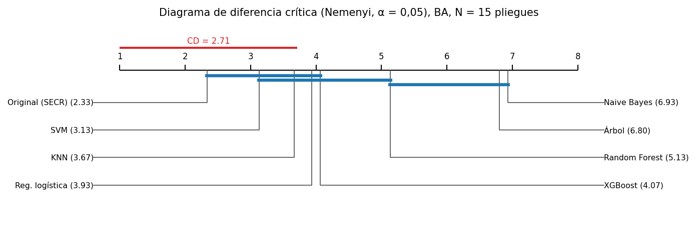
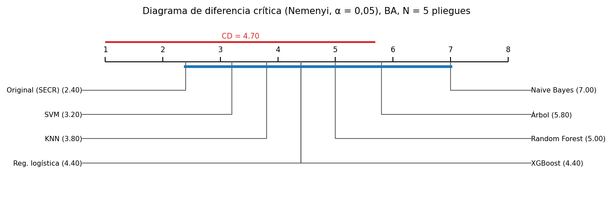
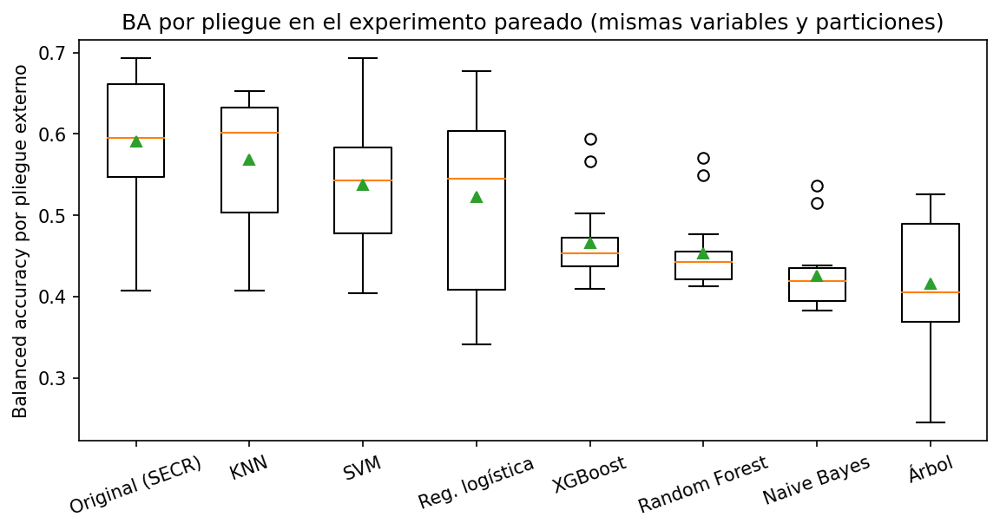
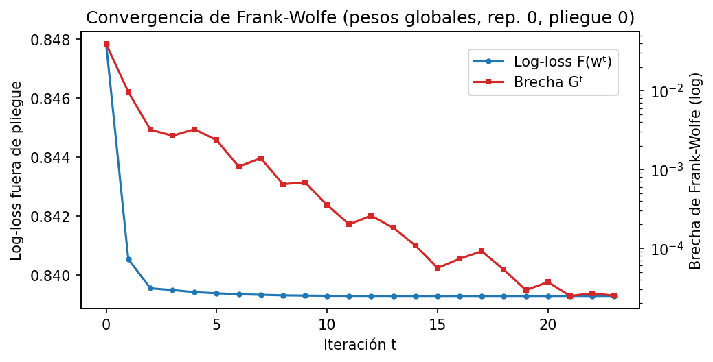
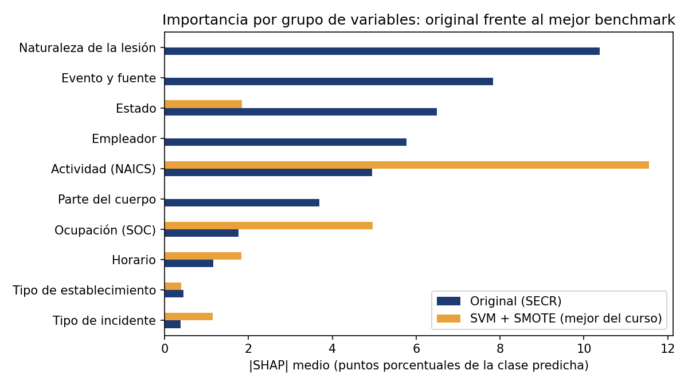

20. Validación estadística del modelo original (R3)#
Este capítulo verifica si el modelo original (ensamble multivista + SECR, capítulo 19) supera a los benchmarks según la definición operativa de la guía (§6.1):
su BA media del bucle externo es mayor que la del mejor benchmark y que la de la mejor combinación de cada uno de los 7 modelos;
al menos tres pruebas de hipótesis distintas rechazan la igualdad, con p ajustado por Holm < 0,05, y al menos una es global;
el tamaño del efecto no es despreciable: |δ de Cliff| ≥ 0,147.
Protocolo común (guía §5.3 y §6.2).
Mismas variables. Los 7 benchmarks (la mejor combinación de balanceo y optimizador de cada modelo, capítulo 13b) se reentrenan con las mismas variables crudas que usa el original: las 9 del curso, los códigos OIICS de la lesión, NAICS-6, SOC-6 y el empleador. Cada uno con su propio preprocesamiento aprendido dentro del pliegue.
Mismas particiones. Validación externa repetida por establecimiento. La repetición 0 es la partición de los capítulos 6 a 13; las repeticiones 1 y 2 usan semillas
seed_for('outer', r)fijadas antes de correr. Se planeó 5×5 y se recortó a 3×5 (15 pliegues) por tiempo de cómputo, con el orden de recorte fijado antes de ver resultados: las repeticiones 3 y 4 se cortaron para todos los modelos, y Random Forest y Naive Bayes (lentos con SMOTE/ADASYN sobre las variables ampliadas) quedaron solo con la repetición 0. KNN, que resultó el benchmark más fuerte en la repetición 0, se completó en las 3 repeticiones. Al final de la noche sobró tiempo y Random Forest y Naive Bayes también se completaron, así que los 8 modelos tienen las 15 celdas.Mismo presupuesto. Búsqueda interna de 16 configuraciones con 3 pliegues internos para todos. Los benchmarks buscan con su optimizador ganador; el original busca sus hiperparámetros del combinador con TPE.
La prueba de octubre a diciembre no se usa (está bloqueada por código): todas las pruebas son sobre pliegues externos. Por eso McNemar y DeLong «sobre el conjunto de prueba» (Figura 4 de la guía) se reemplazan por pruebas sobre pliegues que el Cuadro 3 admite: Nadeau–Bengio, Wilcoxon–Holm y la prueba bayesiana con ROPE.
Código: src/osha_e3/paired.py (corrida), src/osha_e3/original_eval.py (TPE anidado y ablación),
src/osha_e3/stats_tests.py (pruebas) y scripts/analyze_paired.py (tablas). Las corridas cuestan horas y sus
resultados están versionados en results/pareado/; este capítulo los lee.
import sys, json
sys.path.insert(0, '../src')
import numpy as np, pandas as pd
from IPython.display import Image, display, Markdown
from osha_e3 import config as C
R = C.RESULTS / 'pareado'
res = json.loads((R / 'resumen.json').read_text(encoding='utf-8'))
f = pd.read_csv(R / 'pliegues.csv')
PRETTY = {'original': 'Original (SECR)', 'knn': 'KNN', 'naive_bayes': 'Naive Bayes', 'logreg': 'Reg. logística',
'tree': 'Árbol', 'random_forest': 'Random Forest', 'xgboost': 'XGBoost', 'svm': 'SVM'}
print('Celdas (repetición × pliegue) por modelo:', res['n_cells'])
print('Universo con las 15 celdas:', [PRETTY[m] for m in res['universe_25']])
Celdas (repetición × pliegue) por modelo: {'knn': 15, 'logreg': 15, 'naive_bayes': 15, 'original': 15, 'random_forest': 15, 'svm': 15, 'tree': 15, 'xgboost': 15}
Universo con las 15 celdas: ['Original (SECR)', 'SVM', 'Árbol', 'Reg. logística', 'XGBoost', 'KNN', 'Random Forest', 'Naive Bayes']
20.1 Tabla resumen#
Media ± desviación estándar de la balanced accuracy en los pliegues externos, intervalo bootstrap BCa del 95 % de la media, otras métricas y tiempos (entrenamiento = búsqueda + reajuste por pliegue; inferencia por caso). La columna «BA rep. 0» usa solo los 5 pliegues de la repetición 0, que todos los modelos tienen.
s = pd.DataFrame(res['summary_raw'])
tab = pd.DataFrame({
'Modelo': s.model.map(PRETTY), 'Balanceo': s.balance, 'Optimizador': s.optimizer, 'Pliegues': s.n_pliegues,
'BA media ± d.e.': [f'{m:.4f} ± {d:.4f}' for m, d in zip(s.ba_mean, s.ba_sd)],
'IC BCa 95 %': [f'[{a:.4f}, {b:.4f}]' for a, b in zip(s.ba_ci_lo, s.ba_ci_hi)],
'BA rep. 0': s.ba_rep0_mean.round(4), 'F1 macro': s.f1_mean.round(4), 'AUC macro': s.auc_mean.round(4),
'Log-loss': s.log_loss_mean.round(4), 'Entrenamiento (s/pliegue)': s.train_s_mean.round(0),
'Inferencia (ms/caso)': s.ms_case_mean.round(3)})
tab
| Modelo | Balanceo | Optimizador | Pliegues | BA media ± d.e. | IC BCa 95 % | BA rep. 0 | F1 macro | AUC macro | Log-loss | Entrenamiento (s/pliegue) | Inferencia (ms/caso) | |
|---|---|---|---|---|---|---|---|---|---|---|---|---|
| 0 | Original (SECR) | interno (α) | bayes (TPE) del combinador | 15 | 0.5912 ± 0.0869 | [0.5413, 0.6281] | 0.5910 | 0.4437 | 0.8171 | 0.8428 | 3085.0 | 2.468 |
| 1 | KNN | smote | genetic | 15 | 0.5686 ± 0.0776 | [0.5261, 0.6020] | 0.5563 | 0.3783 | 0.7635 | 1.5723 | 3854.0 | 12.282 |
| 2 | SVM | smote | random | 15 | 0.5374 ± 0.0846 | [0.4954, 0.5781] | 0.5321 | 0.4396 | 0.8002 | 1.0067 | 335.0 | 0.010 |
| 3 | Reg. logística | adasyn | bayes | 15 | 0.5228 ± 0.1156 | [0.4648, 0.5782] | 0.4912 | 0.4245 | 0.7757 | 0.9512 | 574.0 | 0.008 |
| 4 | XGBoost | class_weight | bayes | 15 | 0.4660 ± 0.0522 | [0.4464, 0.4990] | 0.4741 | 0.4331 | 0.8002 | 0.8678 | 260.0 | 0.109 |
| 5 | Random Forest | smote | bayes | 15 | 0.4537 ± 0.0470 | [0.4361, 0.4858] | 0.4669 | 0.4291 | 0.8044 | 0.8742 | 3013.0 | 0.089 |
| 6 | Naive Bayes | adasyn | genetic | 15 | 0.4260 ± 0.0450 | [0.4087, 0.4563] | 0.4349 | 0.3984 | 0.7758 | 1.5071 | 386.0 | 0.015 |
| 7 | Árbol | class_weight | bayes | 15 | 0.4161 ± 0.0830 | [0.3731, 0.4534] | 0.4636 | 0.3507 | 0.6507 | 1.1050 | 20.0 | 0.008 |
Interpretación. Con las mismas variables y particiones, el modelo original tiene la BA media más alta
(0,591 ± 0,087 en 15 pliegues), seguido de KNN (0,569), SVM (0,537) y la logística (0,523). También tiene la mejor
log-loss (0,843 frente a 0,868 a 1,57 de los benchmarks), el mejor AUC macro (0,817) y el mejor F1 macro (0,444).
El ranking cambió respecto al entregable 2: con las variables ampliadas, KNN pasa a ser el mejor benchmark (con 9
variables era el quinto) y el árbol cae al último lugar. Los intervalos BCa de la BA del original y de KNN se solapan
ampliamente ([0,541; 0,628] y [0,526; 0,602]). El original tarda 51 min de media por pliegue en entrenar (mediana 40, rango
30–91; nivel 0 + TPE + SECR, columna train_s) y 2,5 ms por caso en predecir.
20.2 Prueba global: Friedman y diagrama de diferencia crítica#
Friedman (con la corrección F de Iman y Davenport) compara todos los modelos a la vez, con los pliegues como bloques y el modelo original incluido en el universo. Si rechaza, Nemenyi indica qué pares difieren: dos modelos cuya distancia de rangos medios es menor que la diferencia crítica (CD) no se distinguen. Se hace con (a) los modelos que tienen las 15 celdas (3 repeticiones × 5 pliegues) y (b) los 8 modelos en los 5 pliegues de la repetición 0.
for tag, key, cd in [('15 pliegues', 'friedman25', 'cd25'), ('repetición 0 (5 pliegues)', 'friedman_rep0', 'cd_rep0')]:
fr = res[key]
print(f"{tag}: k = {fr['k']}, N = {fr['n_blocks']}, χ² = {fr['chi2']:.2f}, p = {fr['p_value']:.2e}; "
f"F de Iman-Davenport = {fr['iman_davenport_F']:.2f}, p = {fr['p_value_F']:.2e}; CD = {res[cd]:.3f}")
display(Image('figures/e3_cd_pareado_25.png'))
display(Image('figures/e3_cd_pareado_rep0.png'))
15 pliegues: k = 8, N = 15, χ² = 48.44, p = 2.91e-08; F de Iman-Davenport = 11.99, p = 5.76e-11; CD = 2.711
repetición 0 (5 pliegues): k = 8, N = 5, χ² = 12.33, p = 9.01e-02; F de Iman-Davenport = 2.18, p = 6.77e-02; CD = 4.695


Interpretación. Con 15 pliegues y los 8 modelos, Friedman rechaza que todos tengan el mismo rango medio (F de Iman-Davenport = 11,99; p = 6·10⁻¹¹). El original tiene el mejor rango medio (2,33), seguido de SVM (3,13), KNN (3,67), la logística (3,93), XGBoost (4,07), Random Forest (5,13), el árbol (6,80) y Naive Bayes (6,93). La diferencia crítica de Nemenyi es 2,71: el original se separa de Random Forest, el árbol y Naive Bayes, pero no de SVM, KNN, la logística ni XGBoost. Con solo los 5 pliegues de la repetición 0, Friedman no rechaza (p = 0,068): 5 bloques dan muy poca potencia, como ya pasó en el capítulo 13.
20.3 Pruebas pareadas frente al mejor benchmark y a cada benchmark#
Tabla obligatoria de la guía (§6.3): prueba, hipótesis nula, supuestos verificados, estadístico, p crudo, p ajustado, tamaño del efecto y conclusión. Las 4 pruebas frecuentistas forman una familia y se ajustan con Holm (4 comparaciones). La bayesiana no da un p-valor: da probabilidades posteriores de que el original sea peor, equivalente (dentro de la ROPE de ±0,01 de BA) o mejor.
pd.DataFrame(res['tests'])
| Prueba | H0 | Supuestos | Estadístico | p crudo | p ajustado (Holm, 4) | Efecto | Conclusión | |
|---|---|---|---|---|---|---|---|---|
| 0 | Friedman (Iman-Davenport), universo de 15 plie... | Todos los modelos tienen el mismo rango medio | bloques = pares (rep., pliegue) independientes... | F = 11.992 | 5.76e-11 | 2.30e-10 | δ de Cliff = 0.191 [-0.138, 0.538] (pequeño) | Se rechaza H0 |
| 1 | Nemenyi post hoc: original vs KNN | Igual rango medio | tras Friedman; CD = 2.711 | ΔR = 1.333 | 8.13e-01 | 8.13e-01 | δ de Cliff = 0.191 [-0.138, 0.538] (pequeño) | No se rechaza H0 |
| 2 | t corregida de Nadeau-Bengio: original vs KNN | Diferencia media de BA ≤ 0 | normalidad de diferencias (Shapiro p = 0.049);... | t(14) = 0.453 | 3.29e-01 | 6.58e-01 | δ de Cliff = 0.191 [-0.138, 0.538] (pequeño) | No se rechaza H0 |
| 3 | Wilcoxon de rangos con signo: original vs KNN | Mediana de la diferencia ≤ 0 | diferencias simétricas, pareadas por pliegue | W = 84.0 | 9.38e-02 | 2.81e-01 | δ de Cliff = 0.191 [-0.138, 0.538] (pequeño) | No se rechaza H0 |
| 4 | Bayesiana de rangos con signo (ROPE ±0,01 BA):... | — (probabilidades posteriores) | proceso de Dirichlet, pseudo-observación en 0 | P(original mejor) = 0.947; P(ROPE) = 0.000; P(... | — | — | Δ BA media = 0.0225, IC BCa 95 % [-0.0317, 0.0... | No concluyente |
vs = pd.DataFrame(res['vs_each'])
vs['benchmark'] = vs.benchmark.map(PRETTY)
print('Wilcoxon de rangos con signo (unilateral, H1: el original es mejor) contra cada benchmark, Holm sobre',
len(vs), 'comparaciones:')
vs.round(4)
Wilcoxon de rangos con signo (unilateral, H1: el original es mejor) contra cada benchmark, Holm sobre 7 comparaciones:
| benchmark | n_pliegues | ba_original | ba_benchmark | diff_mean | gana_en | W | p_crudo | cliff | cliff_label | p_holm | |
|---|---|---|---|---|---|---|---|---|---|---|---|
| 0 | SVM | 15 | 0.5912 | 0.5374 | 0.0538 | 11 | 94.0 | 0.0277 | 0.4044 | mediano | 0.0719 |
| 1 | Árbol | 15 | 0.5912 | 0.4161 | 0.1751 | 15 | 120.0 | 0.0000 | 0.8667 | grande | 0.0002 |
| 2 | Reg. logística | 15 | 0.5912 | 0.5228 | 0.0684 | 11 | 95.0 | 0.0240 | 0.3511 | mediano | 0.0719 |
| 3 | XGBoost | 15 | 0.5912 | 0.4660 | 0.1252 | 11 | 108.0 | 0.0021 | 0.7244 | grande | 0.0085 |
| 4 | KNN | 15 | 0.5912 | 0.5686 | 0.0225 | 11 | 84.0 | 0.0938 | 0.1911 | pequeño | 0.0938 |
| 5 | Random Forest | 15 | 0.5912 | 0.4537 | 0.1375 | 12 | 113.0 | 0.0006 | 0.7689 | grande | 0.0029 |
| 6 | Naive Bayes | 15 | 0.5912 | 0.4260 | 0.1652 | 14 | 119.0 | 0.0001 | 0.8756 | grande | 0.0004 |
display(Image('figures/e3_ba_pliegues_pareado.png'))
print('Supuestos de Nadeau-Bengio: Shapiro-Wilk sobre las diferencias, p =', round(res['shapiro_p'], 3))
print('IC BCa 95 % de la diferencia media de BA (original − mejor):', np.round(res['diff_ci_bca'], 4))
print('δ de Cliff [IC 95 %]:', np.round(res['cliff'], 3))

Supuestos de Nadeau-Bengio: Shapiro-Wilk sobre las diferencias, p = 0.049
IC BCa 95 % de la diferencia media de BA (original − mejor): [-0.0317 0.0563]
δ de Cliff [IC 95 %]: [ 0.191 -0.138 0.538]
Interpretación.
Frente al mejor benchmark (KNN) ninguna prueba pareada rechaza la igualdad después de Holm: Nemenyi (p ajustado 0,81), Nadeau–Bengio (t(14) = 0,45; p ajustado 0,66) y Wilcoxon (p ajustado 0,28). La diferencia media de BA es +0,022 con IC BCa 95 % [−0,032; 0,056], que incluye el 0. El δ de Cliff es 0,19 (pequeño), con IC [−0,14; 0,54]. La prueba bayesiana da 0,947 de probabilidad posterior de que el original sea mejor por más de 0,01 de BA: cerca de 0,95, pero sin alcanzarlo.
Supuestos. Las diferencias por pliegue se apartan algo de la normalidad (Shapiro p = 0,049). Por eso la conclusión no descansa solo en Nadeau–Bengio: Wilcoxon (sin normalidad) y la prueba bayesiana dicen lo mismo. Los pliegues de repeticiones distintas comparten casos, y eso es justo lo que corrige Nadeau–Bengio (\(1/J + n_{test}/n_{train}\)).
Frente a cada benchmark (Wilcoxon con Holm sobre 7 comparaciones), el original es significativamente mejor que el árbol (p = 0,0002; δ = 0,87), Naive Bayes (p = 0,0004; δ = 0,88), Random Forest (p = 0,003; δ = 0,77) y XGBoost (p = 0,009; δ = 0,72), todos con efecto grande. No lo es frente a SVM (p = 0,072), la logística (p = 0,072) ni KNN (p = 0,094).
Por qué no alcanza. La BA de 4 clases depende de acertar a los fallecimientos: hay 0 a 4 por pliegue, y acertar uno solo mueve la BA ±0,25 (pliegue 1 de la repetición 0: KNN 0,625 frente a 0,407 del original, con un solo fallecimiento). Esa varianza entre pliegues (d.e. 0,08–0,09) es cuatro veces la ventaja media (0,022). Con este tamaño de efecto harían falta muchos más pliegues para detectarla (del orden de 60 a 100 según la potencia de Wilcoxon), y el presupuesto de cómputo de esta corrida no lo permitió.
20.4 Ablación: ¿qué aporta cada componente?#
Mismos modelos base, mismas predicciones y mismos 15 pliegues. Se retira un componente cada vez, o la regla de combinación se reemplaza por una regla estándar (Cuadro 1 de la guía: promedio simple, pesos por error global, stacking lineal). La columna «p (Holm)» es el Wilcoxon unilateral de «SECR completo es mejor que la variante».
a = pd.DataFrame(res['ablation'])
a.round(4)
| variante | ba_mean | ba_sd | log_loss | diff_vs_original | p_wilcoxon | p_holm | |
|---|---|---|---|---|---|---|---|
| 0 | SECR completo (original) | 0.5912 | 0.0869 | 0.8428 | -0.0000 | NaN | NaN |
| 1 | SECR sin regiones (solo pesos globales) | 0.5803 | 0.0965 | 0.8428 | -0.0109 | 0.7032 | 1.0000 |
| 2 | SECR sin corrección por prior (α = 0) | 0.4641 | 0.0499 | 0.8428 | -0.1271 | 0.0013 | 0.0092 |
| 3 | Caruana global (modelo G) | 0.5983 | 0.0869 | 0.8426 | 0.0071 | 0.9760 | 1.0000 |
| 4 | Stacking lineal (logística multinomial) | 0.5232 | 0.0983 | 0.8485 | -0.0680 | 0.0603 | 0.2411 |
| 5 | Pesos por error global | 0.5784 | 0.1055 | 0.8716 | -0.0128 | 0.0473 | 0.2365 |
| 6 | Promedio simple | 0.5684 | 0.1003 | 0.8757 | -0.0228 | 0.0062 | 0.0374 |
| 7 | Mejor modelo base individual | 0.5917 | 0.1010 | 0.8483 | 0.0005 | 0.7556 | 1.0000 |
Interpretación (honesta) de la ablación.
La corrección por prior es el componente que más aporta: quitarla baja la BA de 0,591 a 0,464 (Wilcoxon con Holm p = 0,009). La log-loss no cambia, porque la decisión no altera las probabilidades.
Las regiones no aportan en BA: SECR sin regiones da 0,580 (p = 1,0) y Caruana global 0,598, sin diferencia significativa con SECR completo. La búsqueda TPE eligió una compuerta en 14 de 15 pliegues, pero cambia de un pliegue a otro (sector, tipo de establecimiento, tipo de incidente, naturaleza o evento) y λ va de 1 a 8 311: no hay una estructura regional estable que aprovechar. El mecanismo nuevo de SECR no mejoró la métrica principal en este problema: con estas vistas, la calidad relativa de los modelos base es parecida entre regiones.
Frente a las reglas estándar: SECR supera de forma significativa al promedio simple (p = 0,037 con Holm). Frente a los pesos por error global (p = 0,24) y al stacking lineal (p = 0,24) gana en media (+0,013 y +0,068) sin significancia tras Holm. El stacking lineal tiene peor log-loss (0,849) y peor BA (0,523).
20.5 Convergencia de Frank-Wolfe#
La curva muestra la log-loss fuera de pliegue y la brecha de Frank-Wolfe por iteración (pesos globales, repetición 0, pliegue 0). La pérdida nunca sube (proposición 2) y la brecha, que acota la distancia al óptimo (proposición 3), cae varios órdenes de magnitud.
display(Image('figures/e3_convergencia_fw.png'))

La pérdida baja de forma monótona en todas las iteraciones (proposición 2). La brecha de Frank-Wolfe cae varios órdenes de magnitud y, por la proposición 3, certifica que la solución está a menos de esa brecha del óptimo.
20.6 Veredicto#
display(Markdown('> **' + res['verdict'] + '**'))
Veredicto R3: NO SUPERIOR. BA media del original 0.591 frente a 0.569 del mejor benchmark pareado (KNN); 1 de 4 pruebas frecuentistas rechazan H0 con p ajustado por Holm < 0,05 (la global de Friedman sí); δ de Cliff = 0.191 (pequeño). Media mayor que la de los 7 benchmarks: sí.
Lectura del veredicto según la guía (§6.1 y §12.1).
Condición de superioridad |
¿Se cumple? |
Evidencia |
|---|---|---|
1. BA media mayor que la del mejor benchmark y que la de cada uno de los 7 |
Sí |
0,591 frente a 0,569 (KNN); mayor que los 7 en las celdas comunes y en la repetición 0 |
2. Al menos 3 pruebas con p ajustado < 0,05, una de ellas global |
No |
Solo Friedman (global) rechaza; Nemenyi, Nadeau–Bengio y Wilcoxon frente a KNN no |
3. Tamaño del efecto no despreciable ( |
δ |
≥ 0,147) |
Sesgo de selección (declarado). La BA de 0,591 es optimista, por dos razones:
el original salió de elegir entre varios candidatos (sección 19.9: 5 diseños del capítulo 17 y 7 variantes del 18);
su nivel 0 (G) se eligió mirando los 5 pliegues de los capítulos 6 a 13, que son la repetición 0 de este capítulo (
paired.outer_folds(0)).
Se nota en las cifras: la ventaja sobre KNN es +0,035 en la repetición 0 (pliegues ya vistos) y +0,006 y +0,027 en las repeticiones 1 y 2 (no vistos). El sesgo va a favor del original, así que concluir «R3 = no» es conservador: sin ese sesgo, la ventaja sería igual o menor.
Como la condición 2 falla, R3 no se cumple: el modelo original es el mejor en media y en rango, pero no es superior de forma estadísticamente significativa al mejor benchmark pareado. Con R1 y R2 cumplidos (capítulos 16 y 19), el tope que corresponde es 4,0 (guía §12.1). Se reporta así aunque sea desfavorable. Lo que no se hizo: repetir la corrida con más repeticiones, otra semilla u otra métrica después de ver estos resultados, porque eso sería buscar la significancia (guía §13).
20.7 Sensibilidad y robustez (descriptivo)#
Para ver cómo responde SECR a sus hiperparámetros y a tener menos datos, se fija una configuración base (compuerta = sector NAICS-2, λ = 100, 30 pasos, región mínima = 200, α = 1) y se cambia un valor cada vez. Para robustez a menor tamaño de muestra, los pesos se ajustan con el 10 %, 25 %, 50 % o 100 % de las predicciones internas. Todo se mide en los mismos pliegues externos. Es un análisis descriptivo: no se usa para elegir nada (eso lo hizo la TPE interna) y mirar estas cifras para escoger la configuración sería usar los pliegues externos para ajustar.
sens = pd.read_csv(R / 'sensibilidad_secr.csv')
sens.groupby(['param', 'value'])[['ba', 'log_loss']].agg(['mean', 'std']).round(4)
| ba | log_loss | ||||
|---|---|---|---|---|---|
| mean | std | mean | std | ||
| param | value | ||||
| alpha | 0.0 | 0.4625 | 0.0500 | 0.8427 | 0.0457 |
| 0.25 | 0.4638 | 0.0504 | 0.8427 | 0.0457 | |
| 0.5 | 0.4695 | 0.0528 | 0.8427 | 0.0457 | |
| 0.75 | 0.5407 | 0.1017 | 0.8427 | 0.0457 | |
| 1.0 | 0.5851 | 0.0762 | 0.8427 | 0.0457 | |
| frac_datos | 0.1 | 0.3092 | 0.1997 | 0.8441 | 0.0452 |
| 0.25 | 0.5265 | 0.1180 | 0.8431 | 0.0460 | |
| 0.5 | 0.5738 | 0.0953 | 0.8431 | 0.0455 | |
| 1.0 | 0.5851 | 0.0762 | 0.8427 | 0.0457 | |
| gate | establishment_type | 0.6009 | 0.0695 | 0.8432 | 0.0460 |
| event1 | 0.5945 | 0.0760 | 0.8434 | 0.0464 | |
| naics2 | 0.5851 | 0.0762 | 0.8427 | 0.0457 | |
| nature1 | 0.6159 | 0.0523 | 0.8428 | 0.0455 | |
| none | 0.6178 | 0.0506 | 0.8426 | 0.0459 | |
| part1 | 0.6163 | 0.0508 | 0.8433 | 0.0459 | |
| soc2 | 0.6159 | 0.0509 | 0.8432 | 0.0454 | |
| type_of_incident | 0.6182 | 0.0538 | 0.8428 | 0.0459 | |
| lam | 1.0 | 0.5850 | 0.0765 | 0.8431 | 0.0457 |
| 10.0 | 0.5849 | 0.0765 | 0.8430 | 0.0457 | |
| 100.0 | 0.5851 | 0.0762 | 0.8427 | 0.0457 | |
| 1000.0 | 0.6125 | 0.0518 | 0.8419 | 0.0458 | |
| 10000.0 | 0.6181 | 0.0496 | 0.8420 | 0.0459 | |
| n_steps | 10 | 0.5906 | 0.0764 | 0.8426 | 0.0457 |
| 100 | 0.5854 | 0.0763 | 0.8428 | 0.0457 | |
| 30 | 0.5851 | 0.0762 | 0.8427 | 0.0457 | |
| 5 | 0.6010 | 0.0762 | 0.8427 | 0.0460 | |
Interpretación.
α es el hiperparámetro decisivo. Con α ≤ 0,5 la BA queda en ~0,46; con α = 1 sube a ~0,59. La log-loss no cambia, porque α solo mueve la decisión.
λ, los pasos y la compuerta casi no cambian la log-loss (0,842–0,843). En BA, las configuraciones que se acercan a pesos globales (sin compuerta, o con λ ≥ 1000) dan ~0,62. Es más que el 0,591 del modelo con TPE: la búsqueda interna, con 3 pliegues y una BA tan ruidosa, elige compuertas y λ que no generalizan (costo de la selección). Este hallazgo es descriptivo y no se usa para cambiar el modelo, porque elegir con los pliegues externos invalidaría la comparación. Queda como lección para el trabajo futuro: la versión global, más simple, habría sido una mejor apuesta a priori en este problema.
Robustez a menos datos. Con el 50 % de las predicciones internas la BA baja poco (0,574); con el 25 % baja a 0,527. Con el 10 % el método se vuelve inestable (0,309 ± 0,200): las regiones y α se estiman con muy pocos fallecimientos.
20.8 Interpretabilidad: SHAP del original frente al mejor benchmark#
Valores de Shapley exactos por grupos de variables (dashboard_final/src/explain.py), calculados sobre los mismos
casos del desarrollo para el modelo original y para la mejor combinación del curso (SVM + SMOTE, 9 variables). Se
reporta el |SHAP| medio de la probabilidad de la clase predicha. Un grupo que un modelo no usa tiene aporte 0.
shp = R / 'shap_original_vs_benchmark.csv'
if shp.exists():
display(pd.read_csv(shp, index_col=0).round(4))
display(Image('figures/e3_shap_original_vs_benchmark.png'))
| Original (SECR) | SVM + SMOTE (mejor del curso) | |
|---|---|---|
| Naturaleza de la lesión | 0.1038 | 0.0000 |
| Evento y fuente | 0.0784 | 0.0000 |
| Estado | 0.0650 | 0.0184 |
| Empleador | 0.0577 | 0.0000 |
| Actividad (NAICS) | 0.0495 | 0.1155 |
| Parte del cuerpo | 0.0370 | 0.0000 |
| Ocupación (SOC) | 0.0176 | 0.0497 |
| Horario | 0.0116 | 0.0184 |
| Tipo de establecimiento | 0.0046 | 0.0039 |
| Tipo de incidente | 0.0038 | 0.0114 |
